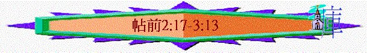

|
信仰的堅立與勉勵 |
|
|
信仰的堅定 |
生活的勉勵 |
|
1-3 |
4-5 |
一.信仰的堅定(1:2-3:13)
1.回想過往的經歷(1:2-2:16)
2.知道神僕的情懷(2:17-3:13)
「所以我們有意到你們那裏；我─保羅有一兩次要去，只是撒但阻擋了我們。」2:18
「我們晝夜切切地祈求，要見你們的面，補滿你們信心的不足。」3:10
「願神─我們的父和我們的主耶穌一直引領我們到你們那裏去。」3:11
「我們的盼望和喜樂，並所誇的冠冕是甚麼呢？豈不是我們主耶穌來的時候、你們在他面前站立得住嗎？」2:19
「打發我們的兄弟在基督福音上作神執事的提摩太前去，堅固你們，並在你們所信的道上勸慰你們，」3:2
「你們若靠主站立得穩，我們就活了。」3:8
「好使你們當我們主耶穌同他眾聖徒來的時候，在我們父神面前，心裏堅固，成為聖潔，無可責備。」3:13
〜此段多「到你們那裏」、「見你們的面」、「站立得穩」、「堅固」字眼
〜保羅想帖撒羅尼迦教會知道他與西拉是很渴望親自來到帖撒羅尼迦，見他們的面，目的是要堅固他們，令他們在神面前站立得穩
保羅願意他們知道自己對教會的心意與情懷，從而激勵他們要滿足神僕的願望，在信仰上站立得穩
A.原來的心意(2:17-20)
a.想見羊群
「弟兄們，我們暫時與你們離別，是面目離別，心裏卻不離別；我們極力地想法子，很願意見你們的面。」帖前2:17
「但那不信的猶太人心裏嫉妒，招聚了些市井匪類，搭夥成群，聳動合城的人闖進耶孫的家，要將保羅、西拉帶到百姓那裏。」徒17:5
「弟兄們隨即在夜間打發保羅和西拉往庇哩亞去。二人到了，就進入猶太人的會堂。」徒17:10
(1)父母心腸
〜「離別」----有成為孤兒(被動語態)，保羅看教會為自己兒女一樣，因著受逼迫，無奈地要與教會暫時離別，教會像暫時成為孤兒一樣
(2)心繫羊群
〜但他的心仍沒離別羊群，心仍然想念他們
(3)渴慕見主
〜「極力」----有急促、竭力、盡力的意思；「想法子」----有甚於，更為意思
〜「很」----為數眾多的，相當分量；「願意」----渴望，響往意思
〜保羅的心懷仍是非常渴慕見羊群的面，而渴慕的程度是逼切、大量的
b.撒但攔阻
「所以我們有意到你們那裏；我─保羅有一兩次要去，只是撒但阻擋了我們。」2:18
「到迦流作亞該亞方伯的時候，猶太人同心起來攻擊保羅，拉他到公堂，」徒18:12
〜撒但有牠的工作，牠可以差遣牠的差役(敵擋神的人)攔阻神僕人的工作
〜保羅在帖撒羅尼迦教會受逼迫，所以離開此地，後期逼迫保羅的人在哥林多也同心攻擊他，保羅和同工不可自由去那裏，就可以去那裏，他們雖有意想見羊群，無奈不能去了
c.心仍盼望
「我們的盼望和喜樂，並所誇的冠冕是甚麼呢？豈不是我們主耶穌來的時候、你們在他面前站立得住嗎？因為你們就是我們的榮耀，我們的喜樂。」2:19-20
〜「所誇」有自誇、自豪的意思；「冠冕」指用花編成的環或冠冕，希臘人競技優勝者所戴的
〜神僕們如比賽的選手一樣，一生至終是想得冠冕，而保羅勞苦作工，至終的滿足、榮耀、喜樂就是主耶穌來時，羊群能在主面前(原文沒有站立得住)，坦然見主，這也是他一直所盼望
〜所以他想見他們的原因也是望他們得堅固，至終在主前站穩
B.改變的計劃----打發同工見羊群(3:1-9)
「我們既不能再忍，就願意獨自等在雅典，打發我們的兄弟在基督福音上作神執事的提摩太前去，堅固你們，並在你們所信的道上勸慰你們，」3:1-2
「送保羅的人帶他到了雅典，既領了保羅的命，叫西拉和提摩太速速到他這裏來，就回去了。保羅在雅典等候他們的時候，看見滿城都是偶像，就心裏著急。」徒17:15-16
〜保羅離開帖撒羅尼迦後，在雅典等候時，打發提摩太見羊群
〜「執事」----執行他人命令的人，提摩太是執行神命令的人
a.原因
(1)不能再忍
〜保羅心裏十分掛念羊群，他去不到帖撒羅尼迦，但他不能再忍(單在雅典等候，所以打發提摩太去見羊群)
(2)堅固羊群
〜「堅固」----有立定、確認、建立及加強意思
(3)勸慰羊群
〜「勸慰」----有叫到身邊來，呼籲、勉勵、安慰意思，提摩太用神的道鼓勵安慰信徒
(4)免受動搖
「免得有人被諸般患難搖動。因為你們自己知道，我們受患難原是命定的。我們在你們那裏的時候，預先告訴你們，我們必受患難，以後果然應驗了，你們也知道。」3:3-4
〜保羅走後，帖撒羅尼迦仍受本地人的苦害，面對之前所講那些患難(諸般----有那些意思)，保羅怕他們因此受動搖，所以派提摩太勸慰堅固他們
〜而信徒受患難原是命定的，保羅也預先告知他們
(5)不被誘惑
「為此，我既不能再忍，就打發人去，要曉得你們的信心如何，恐怕那誘惑人的到底誘惑了你們，叫我們的勞苦歸於徒然。」3:5
〜而也有誘惑人的來引誘他們相信其它異教或似是而非的道理，令神僕之前所作的徒然，所以派提摩太去堅定他們的信仰
(6)知羊情況
〜保羅也渴慕從提摩太知道羊群的信心情況
b.匯報
(1)教會好的消息
「但提摩太剛才從你們那裏回來，將你們信心和愛心的好消息報給我們，又說你們常常記念我們，切切地想見我們，如同我們想見你們一樣。」3:6
「在 神─我們的父面前，不住地記念你們因信心所做的工夫，因愛心所受的勞苦，因盼望我們主耶穌基督所存的忍耐。」1:3
(A)關乎信心與愛心
〜提摩太將教會為神而有的信心及愛心告知保羅與西拉，「那裏回來來」----應指哥林多(保羅寫信的地方)
～而提摩太沒有提及1:3所講的「盼望」，可能因4:13提及有些信徒離開，他們憂傷像沒指望的人
(B)關乎惦念的情懷
〜不單保羅想念他們，他們也常常記念及想見神僕，「切切」----有渴望意思
(2)神僕知後反應
(A)得著安慰
「所以，弟兄們，我們在一切困苦患難之中，因著你們的信心就得了安慰。」3:7
〜「安慰」與之前勸慰，同一個字，作為牧者其中一樣最大的安慰就是信徒在患難中仍有信心
(B)得著力量
「你們若靠主站立得穩，我們就活了。」3:8
〜「就活了」有充滿活力、生命力的意思
〜信徒能站立得穩，神僕生活也有活力來
(C)得著喜樂
「我們在 神面前，因著你們甚是喜樂；為這一切喜樂，可用何等的感謝為你們報答 神呢？」3:9
(D)感謝父神
〜神僕們因著信徒的站穩而喜樂，因而向神發出感謝
C.現有的心願(3:10-13)
a.能見信徒的面
「我們晝夜切切地祈求，要見你們的面，補滿你們信心的不足。願 神─我們的父和我們的主耶穌一直引領我們到你們那裏去。」3:10-11
〜「補滿」----整理、製作、復原、裝備的意思，保羅雖打發提摩太見信徒，但他仍不滿足，晝夜切切想見他們，祈求神引領他們到信徒那裏，而他想見他們的目的是要補滿或整理信徒信心不足地方，從而堅立他們的信心
b.信徒愛心增長
「又願主叫你們彼此相愛的心，並愛眾人的心都能增長，充足，如同我們愛你們一樣。」3:12
〜「增長」----有增多，充足有餘的意思
〜保羅不滿足他們的愛心停留某光景，仍願他們彼此之間的愛及愛眾人的心也都增長，如同神僕愛他們一樣。
c.信徒無可責備
「好使你們當我們主耶穌同他眾聖徒來的時候，在我們父 神面前，心裏堅固，成為聖潔，無可責備。」3:13
「因為主必親自從天降臨，有呼叫的聲音和天使長的聲音，又有 神的號吹響；那在基督裏死了的人必先復活。以後我們這活著還存留的人必和他們一同被提到雲裏，在空中與主相遇。這樣，我們就要和主永遠同在。」4:16-17
〜主耶穌會有一天與聚聖徒回來，在主裡面先死去的人先復活，在地上的聖徒會在空中遇見主及復活的聖徒
〜保羅深願信徒見主時，有以下的表現：
(1)心裏堅固----對所信的確認，不動搖
(2)成為聖潔----無罪、神聖、似神的
(3)無可責備----沒有可以怪罪、無可指摘、沒缺點及瑕疵的